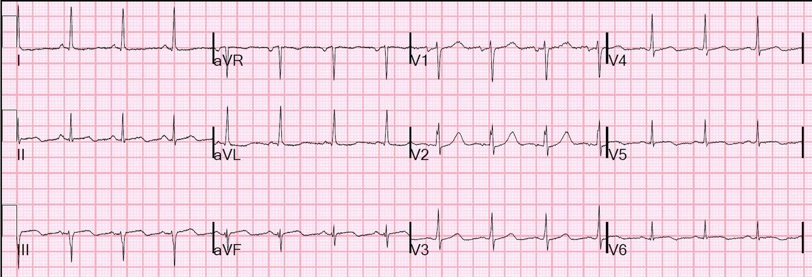
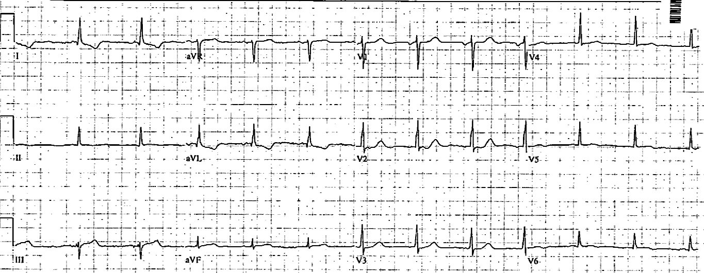
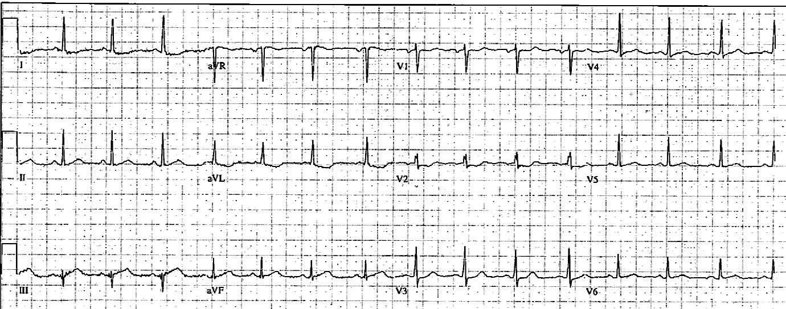
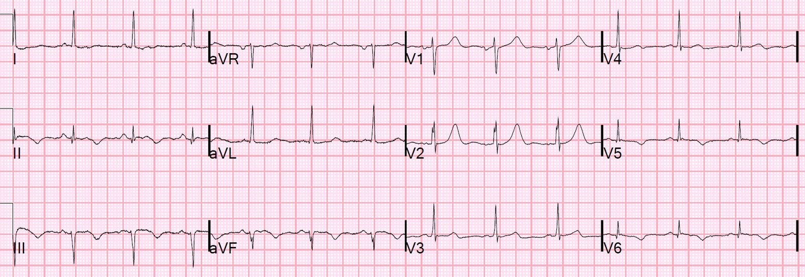
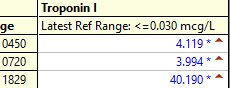
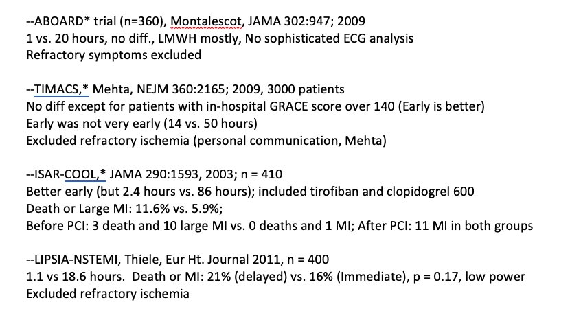
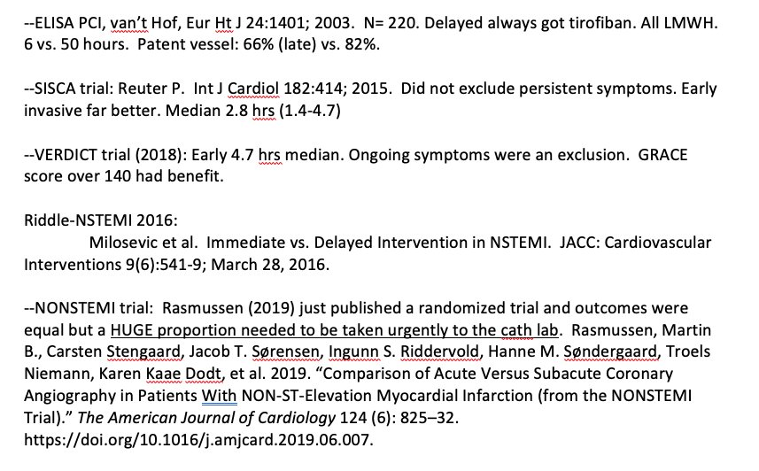
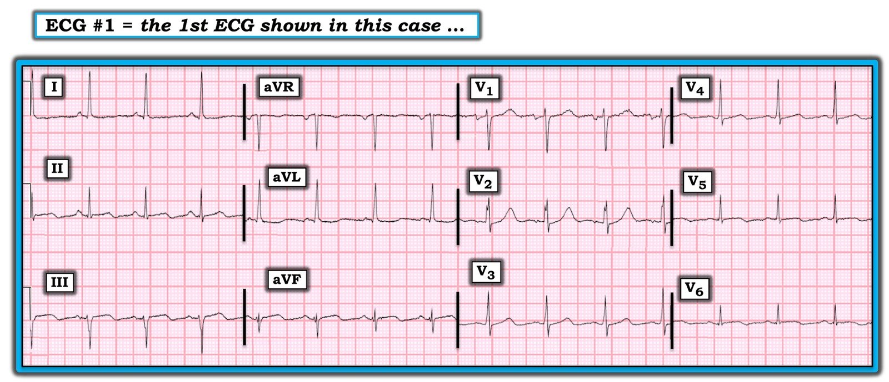
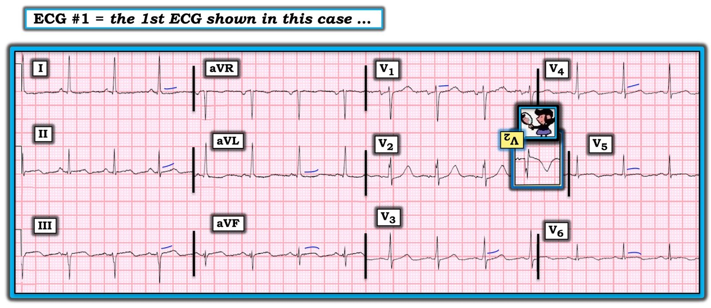

02/10/2020 — Bệnh nhân OMI STEMI âm tính (STEMI(-)OMI) nay đã hết đau. Có cần kích hoạt phòng thông tim cấp cứu không?
Bản dịch tiếng Việt của bài "Patient with STEMI (-) OMI is now pain free. Is there need for emergent cath lab activation?" – Dr. Smith’s ECG Blog. Giữ nguyên toàn bộ 12 hình ảnh của bản gốc.
Tôi đang đọc một chồng điện tâm đồ để ghi kết quả đọc chính thức thì bắt gặp bản ghi này:


Đây là kết quả đọc của tôi khi không có bất kỳ thông tin lâm sàng nào:
“Nghi ngờ nhồi máu đang tiến triển ở thành dưới, thành bên và thành sau.” (“Đang tiến triển” nghĩa là tình trạng đã diễn ra được một thời gian, không còn quá cấp, có lẽ là bán cấp)
Sau đó tôi mở hồ sơ bệnh án của bệnh nhân:
Đây là một phụ nữ 50 mấy tuổi được chuyển đến từ một bệnh viện tuyến trước vào lúc rất sớm trong ngày với chẩn đoán “NSTEMI.” Bệnh nhân bắt đầu đau từ tối hôm trước. Bà kể rằng chiều hôm trước, khi đang rời chỗ làm, bà bắt đầu buồn nôn và vã mồ hôi. Bà vẫn về được đến nhà và ngay sau khi về nhà thì bắt đầu tê cánh tay trái. 2 giờ sau, bà khởi phát đau ngực. Bà đến khoa cấp cứu (ED):
Điện tâm đồ này (điện tâm đồ 1) được ghi tại bệnh viện tuyến trước: mốc thời gian ban đầu (time zero)


Có ST chênh lên (STE) rất ít ở các chuyển đạo dưới, kèm ST chênh xuống soi gương ở aVL. Có đoạn ST dốc xuống ở chuyển đạo V2 và ST chênh xuống nhẹ ở chuyển đạo V3. Trong bối cảnh lâm sàng này, đây là hình ảnh chẩn đoán OMI dưới-sau. Nếu tôi thấy điện tâm đồ này, tôi có thể kích hoạt phòng thông tim (cath lab).
Bà được cho dùng một ít nitroglycerin và heparin, giúp hết đau. Cơn đau tiếp tục lúc tăng lúc giảm. Troponin I trả về là 1.38 ng/mL.
Một điện tâm đồ khác (điện tâm đồ 2) được ghi lúc 1 giờ sau khi đến viện:


Các dấu hiệu vẫn còn. Điện tâm đồ tiếp tục cho thấy thiếu máu cục bộ ngay cả khi không còn đau ngực.
Hãy tin điện tâm đồ: thiếu máu cục bộ thường thầm lặng về mặt lâm sàng.
Thay vì được chụp mạch vành cấp cứu, bà được chuyển đến bệnh viện của chúng tôi, hết đau trong lúc chuyển viện và tiếp tục không đau tại khoa cấp cứu.
Bà được ghi điện tâm đồ này (điện tâm đồ 3) vào khoảng 12 giờ sau khởi phát triệu chứng (chính là điện tâm đồ tôi đã thấy, đăng ở trên):
Các dấu hiệu thiếu máu cục bộ đã cải thiện đáng kể so với các dấu hiệu tại bệnh viện tuyến trước (điện tâm đồ 2 và 3) [người dịch: nguyên văn như vậy; hai điện tâm đồ ghi tại bệnh viện tuyến trước thực ra là điện tâm đồ thứ nhất và thứ hai], nhưng vẫn cho thấy nhồi máu đang tiến triển.
Troponin I đầu tiên của bà tại đây là 4.12 ng/mL (troponin thế hệ hiện hành (contemporary)). Troponin tăng dần tự nó không có nghĩa là tình trạng tắc vẫn còn. Ổ nhồi máu đã xảy ra từ nhiều giờ trước nhưng nay không còn thiếu máu cục bộ thì troponin vẫn sẽ tăng dần, vì troponin tăng là một tín hiệu muộn (trong khi thiếu máu cục bộ trên điện tâm đồ là tức thời, theo thời gian thực).
Và điện tâm đồ này đúng là cho thấy thiếu máu cục bộ đang diễn ra, dù không có đau ngực.
Siêu âm tim tại giường (không trình bày ở đây) cho thấy rõ rối loạn vận động thành sau. Điều này có ý nghĩa gì? Điều này khẳng định kết quả đọc điện tâm đồ là thiếu máu cục bộ và nhồi máu thành sau, nhưng siêu âm tim cũng là một tín hiệu muộn! Cơ tim đã từng thiếu máu cục bộ nhưng nay không còn thiếu máu thường vẫn tiếp tục vô động hoặc giảm động (“choáng cơ tim (myocardial stunning)”) trong nhiều giờ/ngày/tuần. Nếu cơ tim đã thiếu máu cục bộ nhưng chỉ một phần nhỏ bị nhồi máu, vận động thành đó sẽ hồi phục sau nhiều giờ/ngày/tuần. Vì vậy, chúng ta sẽ thấy rối loạn vận động thành dù thiếu máu cục bộ còn đang diễn ra hay không. Nói cách khác, siêu âm tim KHÔNG cho bạn biết bệnh nhân có cần vào phòng thông tim ngay bây giờ để cứu vớt cơ tim hay không.
Troponin I lần sau là 3.99 ng/mL, phản ánh trạng thái ổn định. Việc troponin không tăng có hàm ý rằng không còn thiếu máu cục bộ không? Không nhất thiết. Troponin không dễ đi vào tuần hoàn khi mạch bị tắc 100%; nó bị giữ lại. Phải đến khi động mạch được mở thì troponin mới bị “xả ra” (cách nói của tôi).
Ở đây, điện tâm đồ vẫn còn cho thấy thiếu máu cục bộ, dù đã giảm bớt. Nó giảm bớt vì động mạch đang mở ra? Hay nó giảm bớt vì phần lớn vùng cơ tim nguy cơ bị thiếu máu đã nhồi máu xong và do đó không còn biểu hiện dấu hiệu thiếu máu cục bộ nữa? Tôi tin là khả năng sau: lượng cơ tim còn sống đang giảm dần.
Việc không còn đau có thể mang lại sự yên tâm sai lầm.
Bà được làm PCI vào khoảng 5 giờ sau khi đến viện chúng tôi, tức là tổng cộng 14 giờ sau khi đến bệnh viện tuyến trước (rất muộn).
Chụp mạch vành
LAD đoạn giữa có bệnh lý không xác định mức độ ở đoạn giữa mạch.
RCA đoạn giữa được mô tả là phân đoạn giữa hẹp 65%.
Động mạch mũ trái (LCx): LCx là mạch lớn. LCx là mạch đồng ưu thế.
OM 1 (nhánh của động mạch mũ) là mạch cỡ lớn cấp máu cho thành sau. Mạch này tắc 100% ở đoạn gần.
Mạch được mở thông và đặt stent.
Đây là điện tâm đồ sau PCI:


Sóng Q và sóng T đảo ngược ở các chuyển đạo dưới và các chuyển đạo bên: biểu hiện của mất cơ tim đáng kể và tái tưới máu. Hãy chú ý sóng T lớn ở V2. Đây là sóng T tái tưới máu thành sau. Tái tưới máu thành sau gây sóng T đảo ngược ở các chuyển đạo phía sau, và điều này được ghi nhận thành sự TĂNG biên độ sóng T ở các chuyển đạo đặt phía trước.
Chỉ đo thêm troponin một lần nữa, và lần đó là muộn:


Kết quả chụp mạch vành không đề cập đến tuần hoàn bàng hệ cấp máu cho vùng cơ tim bị ảnh hưởng, và việc troponin tăng muộn này cho thấy tuần hoàn bàng hệ KHÔNG đủ.
Siêu âm tim:
Phân suất tống máu thất trái ước tính là 51 %.
Rối loạn vận động thành khu trú - thành dưới .
Rối loạn vận động thành khu trú - thành dưới-bên.
Dù có thể các rối loạn vận động thành (WMA) này là do “choáng” (cơ tim thiếu máu cục bộ sẽ hồi phục), điều này khó xảy ra với mức troponin rất cao như vậy. Phần lớn WMA này là do cơ tim đã nhồi máu, không phải bị choáng. Cách duy nhất để biết chắc là ghi siêu âm tim “giai đoạn hồi phục” vào khoảng 6 tuần sau, nhưng việc này đã không được thực hiện.
Những điểm cần học
Có một số thử nghiệm ngẫu nhiên về kích hoạt phòng thông tim “sớm” cho NonSTEMI. Tất cả các thử nghiệm có nhận bệnh nhân đau ngực dai dẳng VÀ đưa bệnh nhân đi trong vòng < 2 giờ sau khi đến khoa cấp cứu đều cho thấy lợi ích. Nói cách khác, nếu bệnh nhân vẫn còn đau và họ thực sự được đưa đi rất nhanh, thì có lợi ích. Bệnh nhân không còn đau ngực (bao gồm cả bệnh nhân của chúng ta ở đây) không có lợi ích tổng thể được chứng minh, trừ khi họ có điểm GRACE trên 140 (thử nghiệm TIMACS và VERDICT).
Vì vậy, không có bằng chứng rằng một bệnh nhân như thế này cần vào phòng thông tim. Nhưng điện tâm đồ là hình ảnh chẩn đoán OMI (tắc mạch) và nó không hồi phục cùng với cơn đau. Không có nghiên cứu nào phân ngẫu nhiên bệnh nhân OMI không có tuần hoàn bàng hệ vào nhóm chụp mạch vành cấp cứu so với chụp trì hoãn, và tôi ngờ rằng không thể thực hiện được nghiên cứu như vậy.
Các NSTEMI không còn đau là một nhóm không đồng nhất, gồm nhiều ca không có nhồi máu đang diễn ra (Non-OMI), nhưng cũng gồm cả OMI với nhồi máu đang diễn ra. Điều hợp lý đơn giản là: nếu có tắc mạch với nhồi máu đang diễn ra, dù có triệu chứng hay không, bệnh nhân cần vào phòng thông tim ngay. Ca này là một ví dụ tuyệt vời.
Tôi cho rằng lẽ ra bệnh nhân phải được thông tim ngay tại bệnh viện tuyến trước, trước khi chuyển viện. Chắc chắn sẽ có nhiều người không đồng ý với tôi về điểm này vì họ không muốn có thể xảy ra một lần kích hoạt phòng thông tim dương tính giả. Nhưng liệu có thể gọi đó là dương tính giả được không, ngay cả khi động mạch đang thông và bệnh nhân cần đặt stent vào ngày mai? Tại sao không làm ngay tối nay?
Đây là một ca ví dụ khác về bệnh nhân tắc hoàn toàn LAD nhưng không có triệu chứng:
Why we need continuous 12-lead ST segment monitoring in Wellens’ syndrome (Vì sao chúng ta cần theo dõi đoạn ST liên tục bằng mười hai chuyển đạo trong hội chứng Wellens)
Nếu bạn biết bệnh nhân có tắc mạch, dù không có triệu chứng, bạn có muốn trì hoãn không?
Tôi tóm tắt các thử nghiệm về can thiệp “sớm” so với trì hoãn cho NonSTEMI tại đây:





===================================
BÌNH LUẬN CỦA TÔI, bởi KEN GRAUER, MD (2/10/2020):
===================================
Tôi hoàn toàn đồng cảm với hoàn cảnh mà Dr. Smith bắt gặp điện tâm đồ thứ 1 trong ca hôm nay — điện tâm đồ này nằm trong một “chồng” điện tâm đồ cần đọc. Trong những năm tôi phải làm một nhiệm vụ tương tự (tức là đọc tất cả điện tâm đồ tại một phòng khám ngoại trú lớn) — tôi luôn thấy đặc biệt thách thức khi phải hoàn tất việc đọc “chồng” bản ghi trước mặt trong thời gian tối thiểu không có sự hỗ trợ của bất kỳ bệnh sử lâm sàng nào.
- Tôi không bao giờ có thời gian để hỏi về bệnh sử và cách xử trí đã thực hiện cho từng bệnh nhân có điện tâm đồ nằm trong chồng lớn trước mặt. Thay vào đó — tôi phải chọn lọc bằng cách giới hạn những bản ghi nào tôi cần mở hồ sơ bệnh án.
Điện tâm đồ thứ 1 trong ca hôm nay là một ví dụ mang tính hướng dẫn về đúng loại điện tâm đồ mà người đọc cần tra cứu hồ sơ bệnh án.
- ĐIỂM THEN CHỐT (PEARL) — Tiêu chí MẤU CHỐT tôi dùng để tối ưu hiệu quả về thời gian khi xử lý một “chồng” bản ghi không có sự hỗ trợ của bất kỳ bệnh sử nào — là việc tôi nhận ra các dấu hiệu điện tâm đồ tinh tế có thể có ý nghĩa lâm sàng mà tôi nghĩ có thể bị bỏ sót bởi những người khác. Đây chính xác là điều Dr. Smith đã làm rất sắc sảo trong ca hôm nay.
Trong phần bàn luận ở trên — Dr. Smith đối chiếu việc đọc các điện tâm đồ liên tiếp trong ca hôm nay với các diễn biến lâm sàng. Tôi giới hạn bình luận của mình ở bản ghi thứ 1 trình bày ở trên, bản ghi nằm trong “chồng” bản ghi mà Dr. Smith cần đọc.
- VÌ SAO Dr. Smith cần mở hồ sơ bệnh án sau khi xem điện tâm đồ #1? (Để cho rõ — tôi đã trình bày lại điện tâm đồ thứ 1 này trong Hình 1).


Hình 1: Điện tâm đồ thứ 1 trong ca hôm nay (Xem phần bài viết).
VÌ SAO Dr. Smith Mở Hồ Sơ Bệnh Án?
Hãy XEM lại điện tâm đồ #1. Hãy nhớ hoàn cảnh: BẠN được yêu cầu đọc bản ghi này không có sự hỗ trợ của bất kỳ bệnh sử nào.
- VÌ SAO điện tâm đồ #1 cần được quan tâm?
SUY NGHĨ CỦA TÔI về điện tâm đồ #1: — Nhịp xoang 85-90/phút. Mọi khoảng đều có vẻ bình thường. Trục lệch trái — nhưng chưa đủ lệch trái để đạt tiêu chuẩn LAHB (tức là phức bộ QRS vẫn chủ yếu dương ở chuyển đạo II). Không lớn buồng tim. Về Thay đổi Q–R–S–T:
- Có sóng Q vách rất nhỏ ở chuyển đạo I và aVL. Các sóng này không có ý nghĩa. Không có sóng Q nào khác (tức là có một sóng lệch dương ban đầu rất nhỏ ở mỗi chuyển đạo dưới).
- Về tăng tiến sóng R — vùng chuyển tiếp xảy ra sớm, với sóng lệch chủ yếu dương (sóng R) ngay từ chuyển đạo V2. Điều này có liên quan đến ca hôm nay! (Xem bên dưới).
Về Thay đổi đoạn ST-sóng T — Những thay đổi này tinh tế — nhưng chắc chắn có! Tôi minh họa các mối lo ngại của mình trong Hình 2 bằng cách thêm các đường XANH LAM vào 10 chuyển đạo và thêm một hình soi gương của 1 phức bộ ở chuyển đạo V2.
- Hãy XEM lại chuyển đạo V2 trong Hình 1. Đây là chuyển đạo khiến tôi chú ý nhất trên điện tâm đồ #1. Có ST chênh xuống tinh tế nhưng có thật ở chuyển đạo V2, điều đơn giản là không nên có. Hình ảnh soi gương của chuyển đạo V2 trong Hình 2 giúp thấy rõ lý do. Trong hình đảo ngược (hình soi gương) — sóng R cao sớm bất thường ở chuyển đạo V2 trở thành một sóng Q sâu — và ST chênh xuống tinh tế trở thành ST chênh lên dạng vòm. (Để biết thêm về cách dùng nghiệm pháp soi gương (Mirror-Test) giúp nhận ra nhồi máu cơ tim thành sau — XEM Bình luận của tôi ở cuối bài ngày 28 tháng Chín năm 2020 trên Dr. Smith’s ECG Blog).
Một khi đã nhận ra những bất thường này ở chuyển đạo V2 — tôi xem kỹ phần còn lại của điện tâm đồ.
- Nhồi máu cơ tim thành sau cấp (hoặc bán cấp) thường đi kèm dấu hiệu nhồi máu thành dưới. Đoạn ST ở mỗi chuyển đạo dưới đều thẳng đuỗn bất thường (các đường XANH LAM) — gợi ý ST chênh lên nhẹ và thoáng có ST dạng vòm ở chuyển đạo aVF (Điểm J ở chuyển đạo III và aVF “trông” chênh lên — dù mức ST chênh lên thực sự là rất ít).
- Việc những thay đổi ST-T tinh tế này ở các chuyển đạo dưới là có thật — được củng cố bởi đoạn ST lõm nông thấy ở chuyển đạo aVL (trông giống hình soi gương của ST dạng vòm ghi nhận ở chuyển đạo aVF).
- Chuyển đạo bên cao còn lại ( = chuyển đạo I) không bình thường. Dù không có lệch đoạn ST ở chuyển đạo I — đoạn ST dẹt một cách bất thường.
- ST dạng vòm tinh tế nhưng có thật cũng được gợi ý ở các chuyển đạo ngực bên V5 và V6.
- Các chuyển đạo ngực còn lại ( = chuyển đạo V1, V3 và V4) đều có đoạn ST thẳng đuỗn tinh tế (các đường XANH LAM ở những chuyển đạo này).
NHẬN ĐỊNH LÂM SÀNG: Tất cả các dấu hiệu trên ở điện tâm đồ #1 đều tinh tế! Tôi không nghĩ điện tâm đồ #1 trông giống một nhồi máu cơ tim vừa mới xảy ra — nhưng các dấu hiệu điện tâm đồ tôi mô tả ở trên có thể phản ánh một nhồi máu cơ tim bán cấp (tức là khởi phát trong vòng vài giờ gần đây).
- Tôi cho rằng hình dạng phức bộ QRS và sóng ST-T ở chuyển đạo V2 rõ ràng là bất thường. Dù không có chuyển đạo đơn lẻ nào khác tự nó trông cấp tính — vẫn có các bất thường ST-T tinh tế nhưng có thật ở không dưới 11/12 chuyển đạo trên bản ghi này.
- ĐIỀU CỐT LÕI: Đây là một bản ghi mà chúng ta cần mở hồ sơ bệnh án để tìm hiểu Bệnh sử và điều gì đã xảy ra với bệnh nhân! Rõ ràng, cần nhiều thông tin hơn bản ghi đơn lẻ này để ra quyết định lâm sàng. Phần tường thuật chi tiết của Dr. Smith (ở trên) cho biết phần còn lại.


Hình 2: Tôi đã đánh dấu các dấu hiệu chính trên điện tâm đồ #1. Không dưới 11/12 chuyển đạo có bất thường ST-T tinh tế nhưng có thật (các đường XANH LAM + hình soi gương chèn vào ở chuyển đạo V2). Gộp lại — những dấu hiệu điện tâm đồ này phải khiến ta lo ngại!